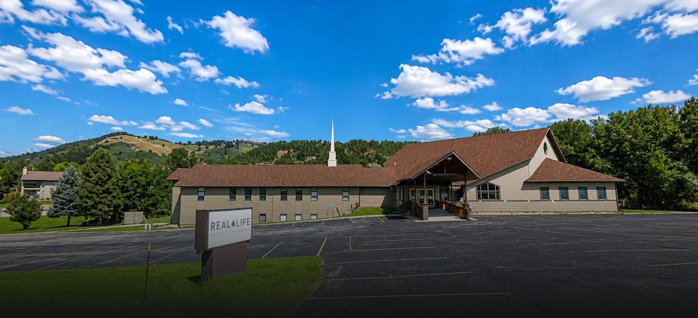
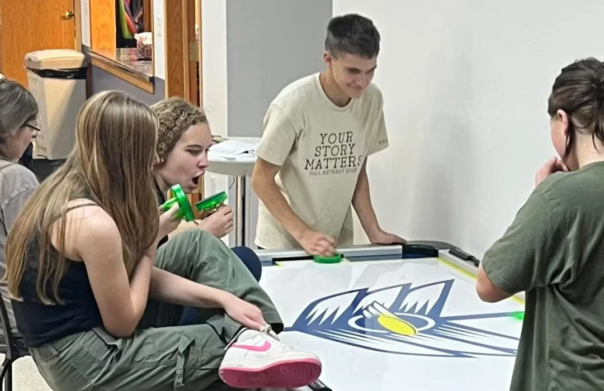

A warm welcome
Friendly people, a comfortable atmosphere, and room to settle in at your own pace.

RAPID CITY, SOUTH DAKOTA
Making your faith real.
Visit
Are you new to faith? There’s a place for you here.
Life at Real Life
Welcome to Real Life
Whether you're exploring faith for the first time or looking for a church to call home, there's a place for you here.
What’s happening
Come as you are
We’d love to welcome you this Sunday. Here’s everything you need to feel at home before you arrive.
Your first Sunday
Join us for Bible studies, worship, or both. Come as you are and expect a warm welcome.
Our church is located at 4024 Sheridan Lake Road in Rapid City.
What to expect
Friendly people, a comfortable atmosphere, and room to settle in at your own pace.
A message rooted in Scripture and connected to everyday life.
A church family where children, students, adults, and seniors can grow together.
For parents
Kids’ Life runs during the 10:30 AM service for children from infant through 5th grade — safe, fun, Bible-based teaching with secure check-in and check-out and background-checked volunteers in every room.
Check-in opens at 10:15 AM. First visit? Plan about 10 extra minutes — the welcome team at the check-in will walk you through registering your kids, so you can settle in and enjoy the service.
Have a little one under 2 who isn’t ready for Kids’ Life? The Parent & Baby Room has rocking chairs, toys, and a changing table — with the service playing on a TV in the room.
Plan your visit
Tell us you’re coming and we’ll be ready — a welcome at the door and your kids’ check-in started.
Who we are
Real Life Church is part of the Church of the Nazarene, a Christian community following Jesus in the Wesleyan-Holiness tradition.
Mission statement
Real Life, where…Jesus opens the door for real relationships.
Real Life, where… We faithfully teach God’s Word and apply its truth to everyday life.
Real Life, where…My whole family learns how to follow Jesus.
Real Life, where…Jesus gives me a heart to love my neighbor.
Our core beliefs
We believe in one God who exists in three distinct persons: Father, Son, and Holy Spirit.
We believe humanity was created in the image of God for fellowship with Him, yet became separated through sin.
We believe forgiveness and salvation come through faith in the death and resurrection of Jesus Christ.
We believe the Spirit empowers believers to mature and become more like Christ.
We believe the Church is the body of Christ, called to glorify God and make Him known.
We believe the Old and New Testaments reveal God’s will in all things necessary to salvation.
Our team
Life together
Grow in faith, build lasting relationships, and serve alongside people who are following Jesus together.
Real Life Families
Kids’ Life, Student Life, and a room just for parents and babies.
Kids
Kids can learn about Jesus in a welcoming church family.
Real Life Daycare
Real Life Daycare is open during the following weekday hours.
Youth
Students connect with leaders and friends as they grow in faith.
Small Groups
Find your people and follow Jesus together — there’s a group for your season of life.
Our Team
Pastors and ministry leaders helping Real Life follow Jesus together.
Serve
Use your gifts to care for people and help our church and city flourish.
Our Mission
Our mission shapes the way we gather, serve, and live in Rapid City.
Families
Real Life Families exists to help your family have fun, meaningful experiences together that connect you to God, each other, and other families.
Kids’ Life
Sundays during the 10:30 AM service and Wednesday evenings during Family Night small groups. Safe, fun, Bible-based teaching — with secure check-in and check-out and background-checked volunteers.

Student Life
Wednesday nights, 6:00–7:30 PM at the church. On Sundays students sit together in the auditorium, and students can serve too — on the worship team, as greeters, or on tech.
For parents with babies under 2 who aren’t ready for Kids’ Life: rocking chairs, toys, and a changing table — with the service playing on a TV in the room, so you can stay close to your little one and still be part of the morning.
Kids check-in opens at 10:15 AM on Sundays — securely checked in and out, every time. First visit? The welcome team at the check-in — to your left as you walk in — will help you register your kids. Plan about 10 extra minutes, and we’ll walk you through it.
Tell us you’re coming and we’ll be ready for you — or jump in and help other families feel at home.
Kids
Kids can learn about Jesus in a welcoming church family.
Real Life Daycare
Real Life Daycare is open during the following weekday hours.
Small Groups
Sunday mornings gather the whole church family. Small groups are where we slow down, get to know each other, and follow Jesus together through the week.
Find your group
Our Team
Pastors and ministry leaders helping Real Life follow Jesus together.
Our team
Our Mission
Our mission shapes the way we gather, serve, and live in Rapid City.
Mission statement
Past services
Return to Sunday’s teaching, catch up on a service, or share a message with a friend.
Current series
Discover your Kingdom identity, your divine purpose, and your place in God’s reign.
Message library
Watch or listen again to the weekly message from Real Life Church.
View servicesFollow the latest teaching series and continue the conversation through the week.
Help someone discover encouragement and biblical teaching from Real Life.
Sundays at 10:30 AM at 4024 Sheridan Lake Road.
Events
There’s always something happening at Real Life for you and your family — here’s what’s on this week, plus the big dates to save.
Save the date
Reach out
Have a question, need prayer, or want to know more about Real Life? Get in touch with our church office.
Contact
4024 Sheridan Lake Road
Rapid City, SD 57702
Office inquiries are welcome by phone or email.
Generosity
Your generosity supports the ministry of Real Life Church and helps us love our neighbors and make disciples of Jesus in Rapid City.
Worship
Generosity is a response to God’s grace and faithfulness.
Mission
Gifts help support the life and work of the church.
Community
Giving helps Real Life serve people in our church and city.
Serve
Use your gifts to care for people and help our church and city flourish.
Volunteer
Help in Kids' Life, the nursery, or Student Life — create safe, fun, faith-filled places where kids and students become disciples who make disciples.
Volunteer form
Fill this out and the church office will help you find your place on a team.
Prefer our current website? You can also sign up here →
Next steps